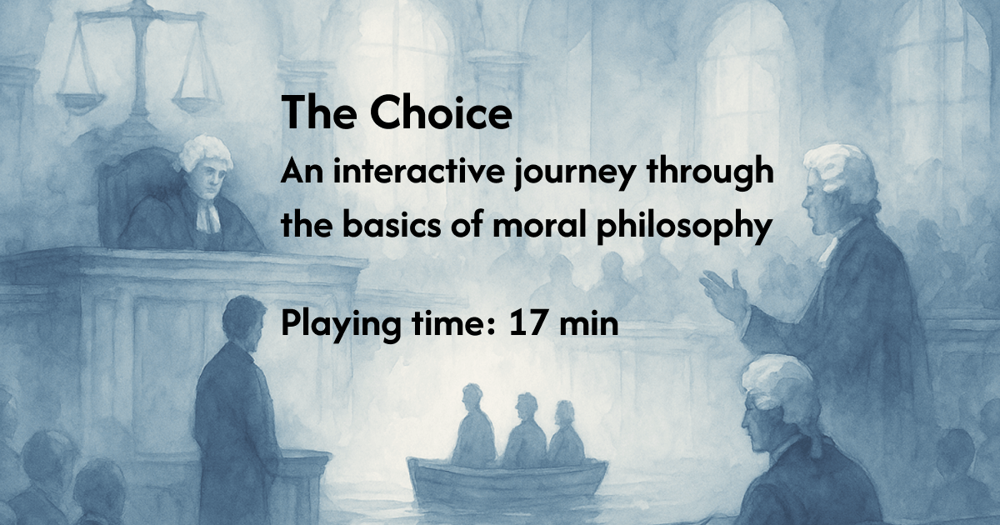
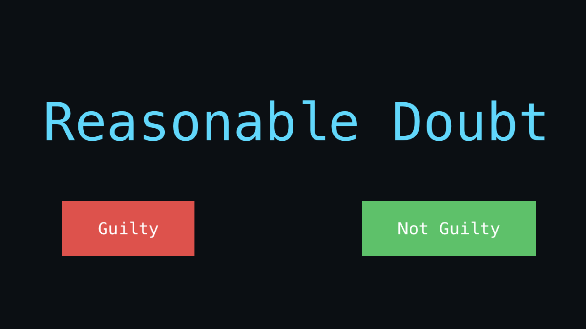

Selected work · 2025—2026
Learning by doing.
Interactive projects that turn complex subjects into experiences people can explore for themselves.
Interactive philosophy game
Case 01
- Goal
- To create an interactive game that offers a first encounter with moral dilemmas and the philosophical approaches used to navigate them.
- How it was made
- The Choice is an interactive novel with an extensive branching dialogue system shaped by the player’s decisions. The game continually challenges the player’s position, showing that no single approach offers the only correct answer and inviting them to explore other ways of thinking. At the end, it uses the player’s responses to reveal which school of thought they are closest to and suggests ideas they may want to study in greater depth.
- Who uses it and how
- The game is used by several universities in Philosophy and Ethics courses. Educators introduce it as an icebreaker, a first encounter with moral dilemmas, and a starting point for classroom discussion.
Visit the project ↗Interactive neuroscience quiz
Case 02
- Goal
- To spark curiosity about the triune brain model and let readers experience how it works in practice through a game.
- How it was made
- The experience is a two-stage multiple-choice quiz. First, players learn what each system in the model is responsible for. They then work through real-life scenarios, identifying which system is in control at a particular moment and how the systems influence one another.
- Who uses it and how
- The quiz was used by a digital media publication as an entry point into an article about the triune brain model. It was designed to draw readers into the subject and encourage them to continue reading, then help them assess how well they understood the concept at the end of the article.
Visit the project ↗Interactive decision game
Case 03
- Goal
- To introduce readers to the use of AI in the justice system and serve as the first step in a digital media content funnel.
- How it was made
- Players decide whether a person is guilty or not guilty using the available evidence and an AI-generated recommendation. After each decision, they see how other players voted and discover whether their judgment aligns with the majority.
- Who uses it and how
- The game is designed for digital media publications as an engaging entry point into the subject. From the experience, readers are directed to articles exploring how AI is already being used to support decisions in courts and the wider justice system.
Visit the project ↗Interactive history game
Case 04
- Goal
- To introduce readers to the development of civilizations through the ideas presented in Jared Diamond’s Guns, Germs, and Steel.
- How it was made
- The game follows five civilizations developing in parallel. Each turn introduces one of the factors explored in the book, showing how it affects every civilization and explaining why the outcomes differ.
- Who uses it and how
- This is a personal project, created for the pleasure of making a game about a book I love. I wanted more people to encounter its ideas and explore the theory for themselves.
Visit the project ↗